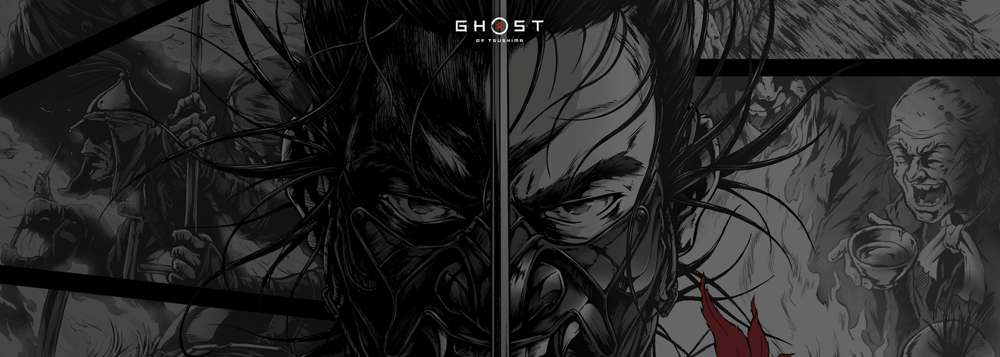
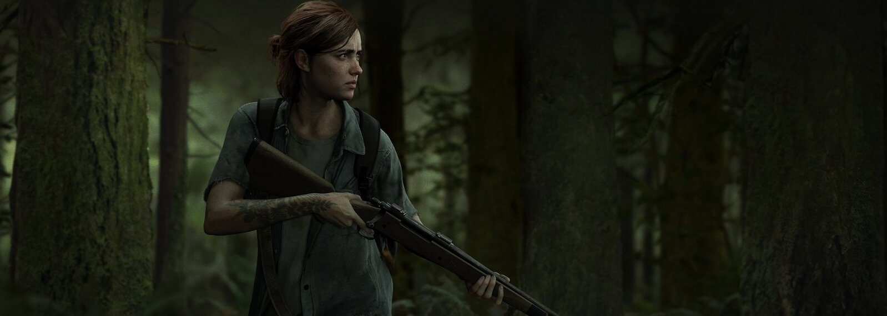

Gosth of Tsushima
Descubre las maravillas ocultas de Tsushima en esta aventura de acción en un mundo abierto creada por Sucker Punch Productions y PlayStation Studios, disponible en PS5 y PS4..

the last uf us2
Cinco años después de su peligroso viaje a través de unos Estados Unidos pospandemia, Ellie y Joel logran establecerse en Jackson, Wyoming.

God of War
Han pasado años desde que Kratos tomó su venganza contra los Dioses Olímpicos. Habiendo sobrevivido la pelea final contra su padre Zeus, Kratos vive ahora con su joven hijo Atreus en el mundo de los Dioses Nórdicos.